關於本手冊
本手冊提供「Bibian EIP 比比昂企業資訊入口平台」日常操作說明，協助申請人完成請款單申請、查詢進度，以及協助簽核主管處理待簽核表單。
上線範圍：目前提供「網家跨境服務股份有限公司」之請款單申請與簽核流程。
請款單完成核准後，申請人請列印已核准表單，並依現行作業規定備妥相關文件，送交財務單位辦理後續請款作業。
登入系統
使用正式環境前，請先連線 NetBird VPN，再使用公司 Google 帳號登入。
2.1 連線公司環境（安裝 NetBird VPN）
無論使用公司內部或外部網路，皆須先開啟 NetBird，並確認連線狀態顯示為「Connected」。

2.2 登入 Bibian EIP
開啟 Bibian EIP 登入頁面後，請使用公司 Google 帳號登入。
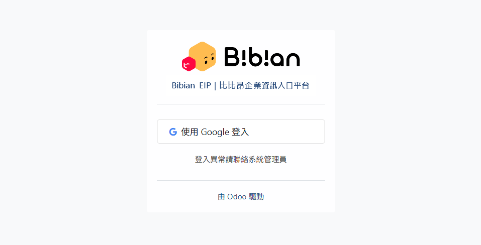
- 點擊「使用 Google 登入」。
- 選擇或驗證公司的 Google 帳號。
- 驗證完成後，系統將自動進入「總覽」頁面。
若無法登入，請聯絡系統管理員協助處理。
系統導覽
登入後，可透過頁面上方的導覽列快速切換功能。
3.1 切換主要功能
點擊左上角九宮格圖示，可切換「總覽」及「表單申請／簽核」。
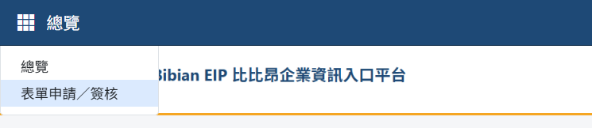
3.2 切換子功能
將滑鼠移至導覽列的功能分類，例如「行政相關表單」，即可展開子選單。點擊「請款單管理」後，可進入對應的操作頁面。
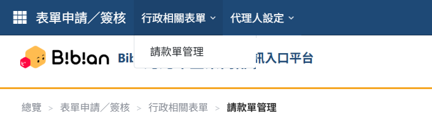
3.3 確認目前位置
Logo 下方的麵包屑會顯示目前所在位置，例如「總覽 > 表單申請／簽核 > 行政相關表單 > 請款單管理」，可協助確認目前操作頁面。
3.4 使用者選單
點擊右上角的使用者名稱，可開啟使用者選單並登出系統。實際顯示功能會依帳號權限而有所不同。
總覽頁面
登入後會先進入「總覽」，可快速查看與自己相關的申請及待簽核事項。
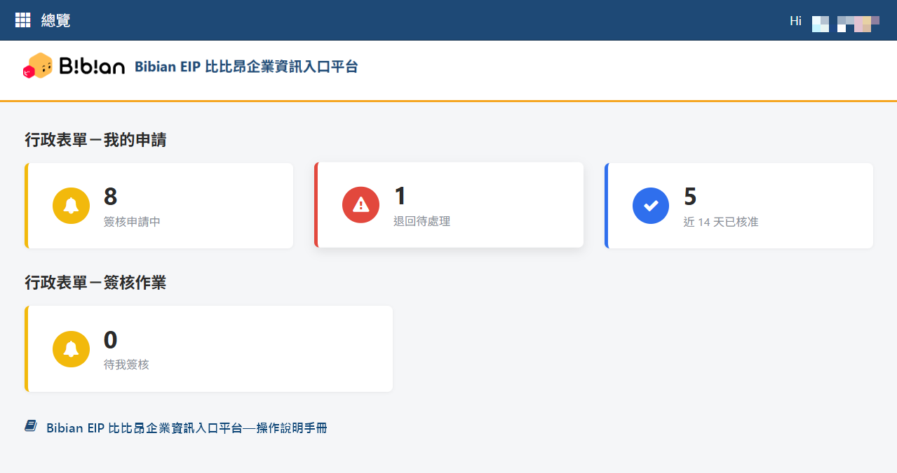
行政表單－我的申請
- 簽核申請中：已送出，目前仍在簽核流程中的申請。
- 退回待處理：遭退回，等待自己修改後重新送出的申請。
- 近 14 天已核准：最近 14 天內完成核准的申請。
行政表單－簽核作業
- 待我簽核：目前等待自己處理的表單。
卡片上的數字代表目前符合該狀態的表單筆數。點擊卡片，可前往對應的請款單列表查看資料。
頁面下方的「Bibian EIP 比比昂企業資訊入口平台—操作說明手冊」可開啟本操作手冊。
請款單管理
5.1 請款簽核流程與通知說明
請款單送出後，系統會依申請金額及簽核規則，依序送交申請人直屬主管、CBS 副總經理、集團總經理及財務單位處理。未達指定金額門檻時，系統會略過對應的簽核關卡。
流程送出、退回、核准、撤回或到達待簽核關卡時，系統會寄送 Email 通知相關人員。
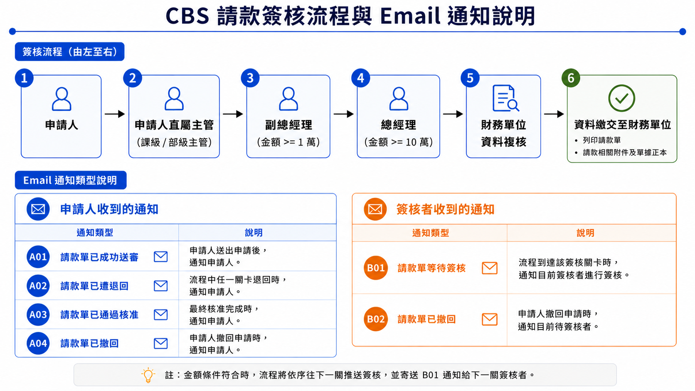
點擊圖片可另開原尺寸流程圖。
5.2 請款單管理列表
可在此新增請款單、追蹤自己的申請進度，或處理等待自己簽核的表單。
進入方式：「行政相關表單 ▾」→「請款單管理」。
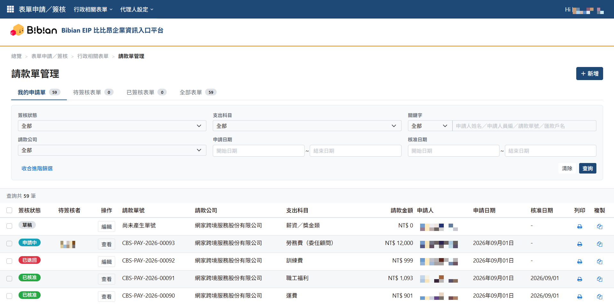
頁籤說明
- 我的申請單：查看自己建立的請款單及目前處理進度。
- 待簽核表單：查看目前等待自己簽核的請款單。
- 已簽核表單：查看自己曾經處理過的簽核表單。
- 全部表單：依帳號權限查看目前可存取的全部請款單。
查詢資料
可依畫面提供的條件篩選資料。輸入條件後點擊「查詢」；如要重新設定條件，點擊「清除」即可。
常用操作
- 編輯：修改可編輯的申請單內容。
- 簽核：進入目前等待自己處理的表單。
- 查看：查看表單內容及簽核紀錄。
- 列印：列印該筆表單。
- 複製：以既有資料建立一張新的表單。
刪除：尚未送出簽核的草稿，可勾選後刪除。
5.3 新增／維護請款單 申請人
點擊列表右上角「＋新增」，即可建立新的請款單。
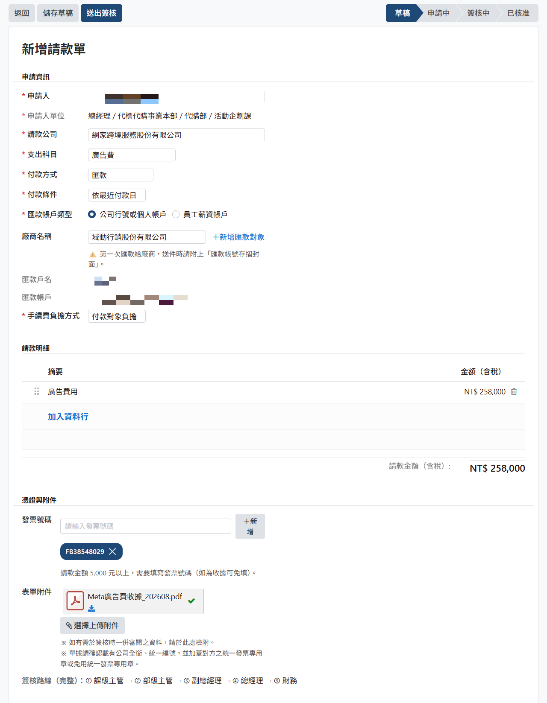
填寫步驟
- 確認申請人、申請單位及申請日期。
- 選擇請款公司、支出科目及付款方式。
- 如付款方式為匯款，依畫面選擇匯款帳戶類型與付款對象，並確認匯款資料。
- 選擇手續費負擔方式。
- 依請款內容填寫發票號碼、請款明細，並視需要上傳附件。
- 確認資料後，可點擊「儲存草稿」暫存，或點擊「送出簽核」進入簽核流程。
退回後修改
若申請單遭退回，可至「我的申請單」開啟該筆資料，依簽核意見完成修改後再次送出。
5.4 請款單簽核 簽核者
表單詳細頁可查看目前的簽核關卡及完整簽核歷程，方便確認目前處理進度。
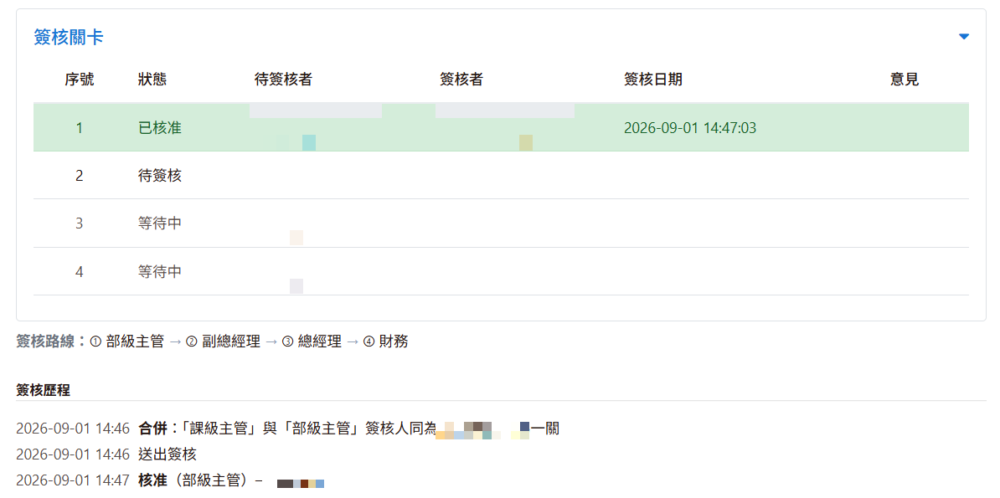
簽核主管操作
- 收到 Email 通知後，可由系統「總覽」的「待我簽核」卡片，或「請款單管理」的「待簽核表單」頁籤，進入待處理的請款單。
- 找到要處理的表單，點擊「簽核」。
- 確認申請內容、請款明細及附件。
- 依實際情況選擇「核准本關」或退回方式。
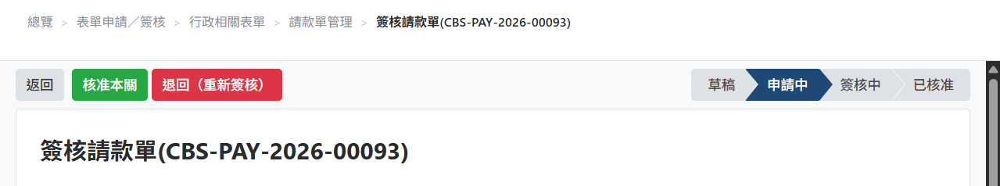
核准與退回
| 操作 | 使用時機 |
|---|---|
| 核准本關 | 確認內容無誤，同意此筆申請。 |
| 退回（重新簽核） | 請申請人修正；重新送出後，會由第一關重新進行簽核。 |
| 退回（僅本關重審） | 僅供財務人員於最後資料審查階段使用。 若退回原因不涉及請款金額異動，可使用此方式；申請人修正並重新送出後，將直接送回財務重審，無須重新經過前序簽核關卡。 若涉及請款金額異動，請使用「退回（重新簽核）」。 |
選擇操作後，依畫面填寫簽核意見或退回原因並確認送出。退回時須填寫退回原因，讓申請人了解需要修改的內容。
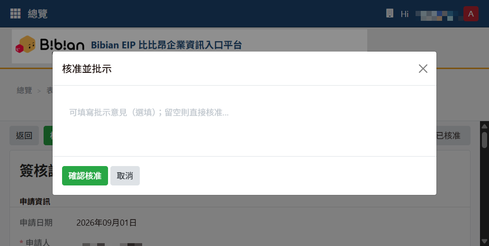
代理人設定
6.1 我的代理人 簽核者
當您因休假、出差或其他原因無法親自處理簽核時，可事先設定代理人及代理期間。代理期間生效後，相關待簽核表單可由指定代理人協助處理。
進入方式：「代理人設定 ▾」→「我的代理人」。
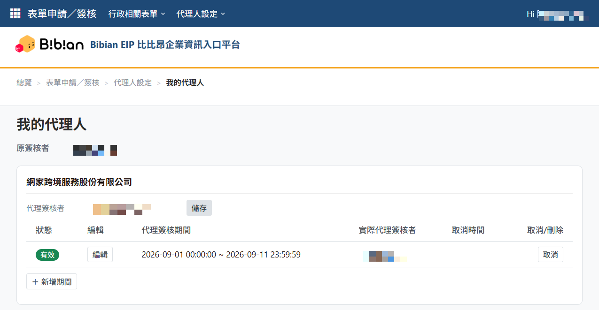
設定方式
- 於欲設定的公司區塊選擇「代理簽核者」。
- 點擊「＋新增期間」，設定代理開始日與結束日。
- 確認代理人及期間後，點擊「確認新增」完成設定。
代理期間管理
- 編輯：可調整既有代理期間的起訖日期。
- 取消：已開始生效的代理期間如需提前停止，可使用「取消」。取消後仍會保留該筆紀錄，但不再生效。
- 刪除：尚未開始的代理期間如不再需要，可直接刪除。
如需改由其他人代理，請先選擇新的代理簽核者，再新增一筆新的代理期間。
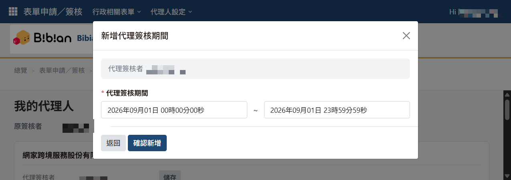
登出
完成操作後，點擊右上角「Hi {姓名} ▾」→「登出」，即可安全離開系統並返回登入頁面。